왜 지금 React Native 대안이 나왔을까요?
영상은 큰 회사들이 React Native를 떠나는 이야기로 시작해요. Shopify는 네이티브로 돌아갔고, Coinbase는 Swift와 Kotlin으로 앱을 다시 짜고 있고, Discord는 React Native보다 Rust에 더 건다고 했어요. "React Native는 끝났나"라는 말이 도는 바로 그 주에 Expo CEO(Chief Executive Officer) Charlie Cheever가 Exact를 공개했어요.
React Native를 골랐던 세 가지 이유
화자는 먼저 React Native가 왜 인기를 끌었는지 짚어요. 슬라이드의 세 칸이 그 이유예요. 코드베이스 하나로 iOS·Android·웹을 내고, 웹 출신 JavaScript 개발자를 그대로 뽑을 수 있고, npm과 React 생태계가 커요. 세 번째 칸의 노란 딱지 'models know it'은 React가 AI(Artificial Intelligence) 모델의 학습 데이터에도 많이 들어 있다는 뜻이에요.
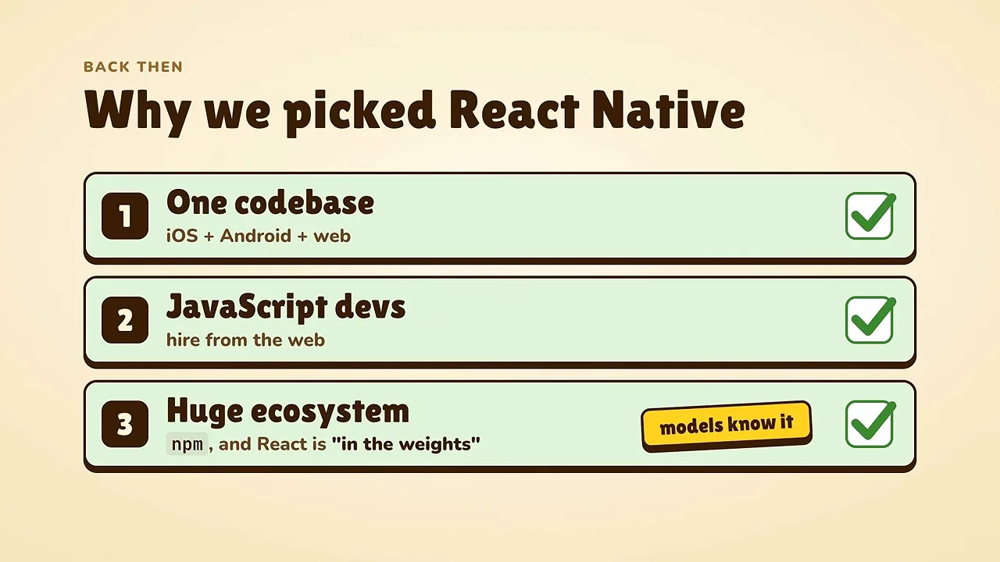
에이전트가 두 번 써 주면 이야기가 달라져요
화자는 지난 1~2년 사이 코드를 거의 직접 만지지 않게 됐다고 해요. 왼쪽 'BEFORE' 칸은 iOS팀이 Swift를, Android팀이 Kotlin을 따로 짜던 시절이라 비용 막대가 빨갛게 꽉 차 있어요. 오른쪽 'WITH AGENTS' 칸은 에이전트가 두 언어를 다 쓰니 막대가 짧은 초록이에요. 아래 결론은 '크로스플랫폼을 고를 이유가 약해진다'예요.
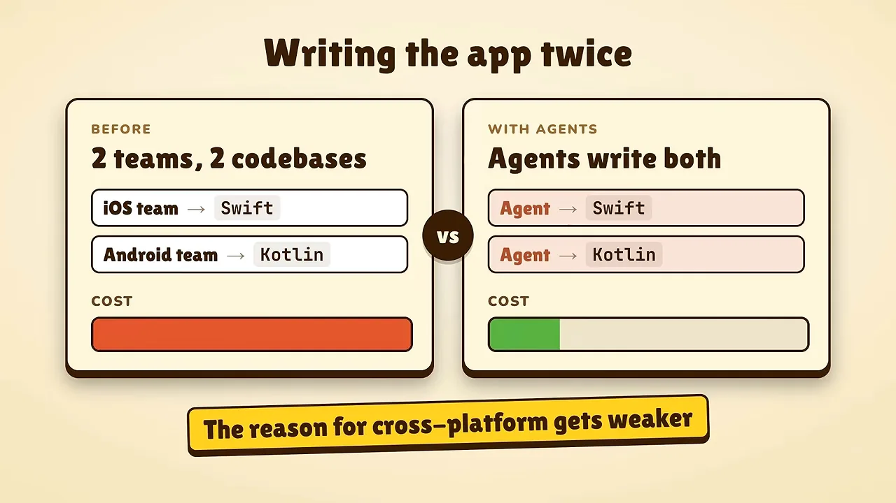
대표 사례가 Shopify예요. Shop 앱을 개념 검증부터 스토어에 올린 네이티브 앱까지 12주 만에 에이전트와 함께 다시 만들었어요. 화자는 Shopify가 React Native 옛 아키텍처와 성능을 비교했다는 지적도 공정하다고 덧붙여요.
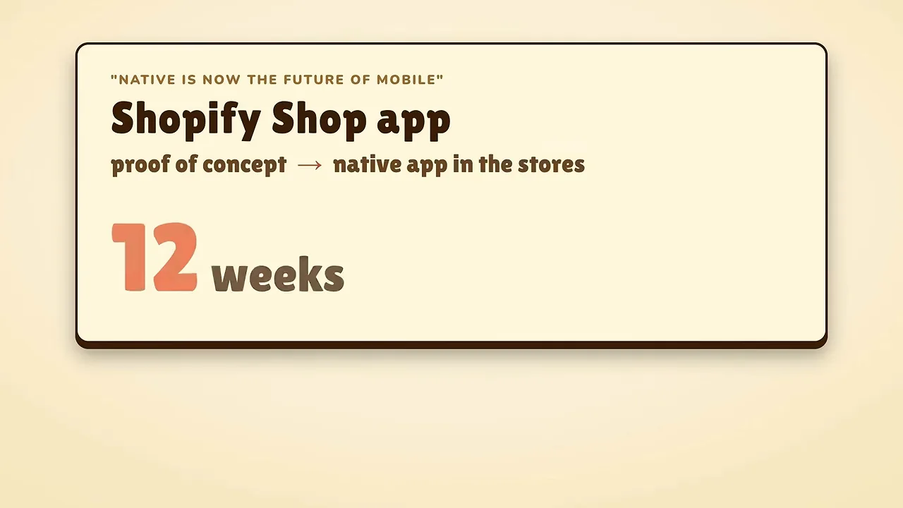
화자 자신도 두 세계 사이에 있어요. 혼자서 iOS와 Android를 한 번에 내려고 React Native를 써 왔는데, 작은 인디 게임 스튜디오의 최근 앱들은 Swift로만 만들었어요. 슬라이드에서 흐리게 처리된 Tiny Harvest·Tiny Spirits는 React Native, 진하게 강조된 Tiny Hospital·Tiny Coffee·Tiny Lemonade는 Swift예요.
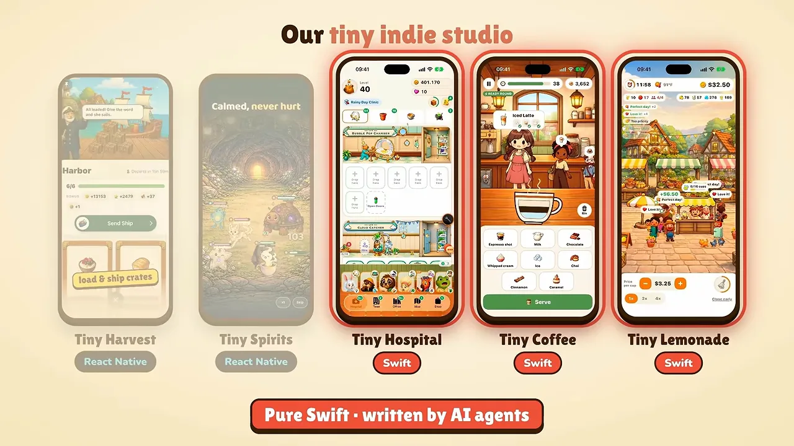
Exact는 무엇인가요
Charlie가 X에 올린 첫 글은 Exact를 'Rust로 만든 새 에이전트 네이티브 앱 프레임워크'라고 소개해요. 영상은 그 위에 'Expo's CEO · Rust · not React'라는 빨간 띠를 붙여, 무엇이 새로운지 세 단어로 요약해요.
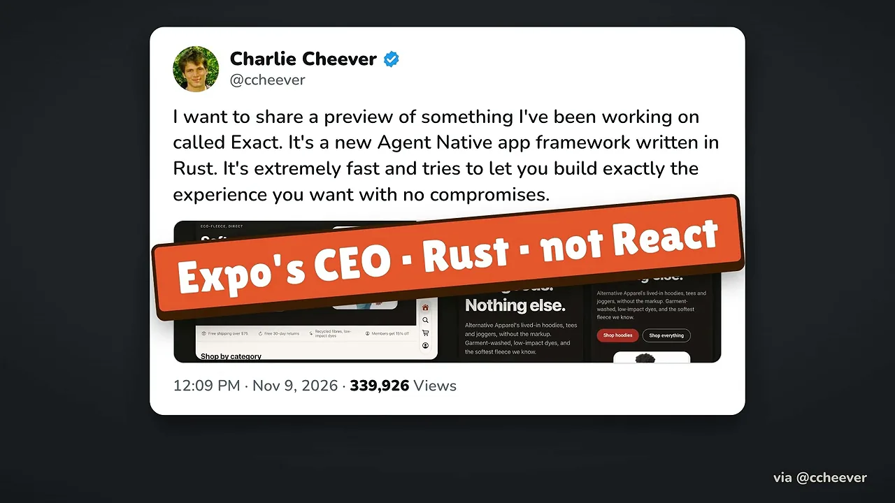
파일 하나로 여러 플랫폼
맨 위 app.contract 하나에서 선이 네 갈래로 뻗어요. 웹은 DOM, macOS는 AppKit, iOS는 UIKit, Linux는 GPU(Graphics Processing Unit) 페인터로 같은 할 일 앱을 그려요. 아래 회색 알약 두 개는 Android와 Windows가 아직 'early'라는 표시예요. 화자는 말로는 웹·iOS·Android·Linux·Windows·macOS 어디서나 돈다고 했으니, 이 화면 표시와 같이 읽는 게 좋아요.
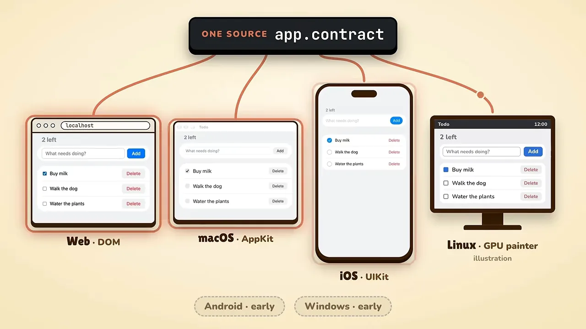
UI는 Contract, 로직은 TypeScript나 Rust
UI는 Contract라는 새 언어로 써요. 오른쪽 코드 창이 할 일 예제예요. component Todos 안에 state, mutation, resource, derive가 있고, 그 아래 action 블록(edit, add, toggle, remove)이 값을 바꿔요. 들여쓰기가 파이썬처럼 보여서 못생겼다는 반응도 있었대요. 화자는 이 언어가 사람보다 에이전트를 위해 만들어졌다고 봐요.
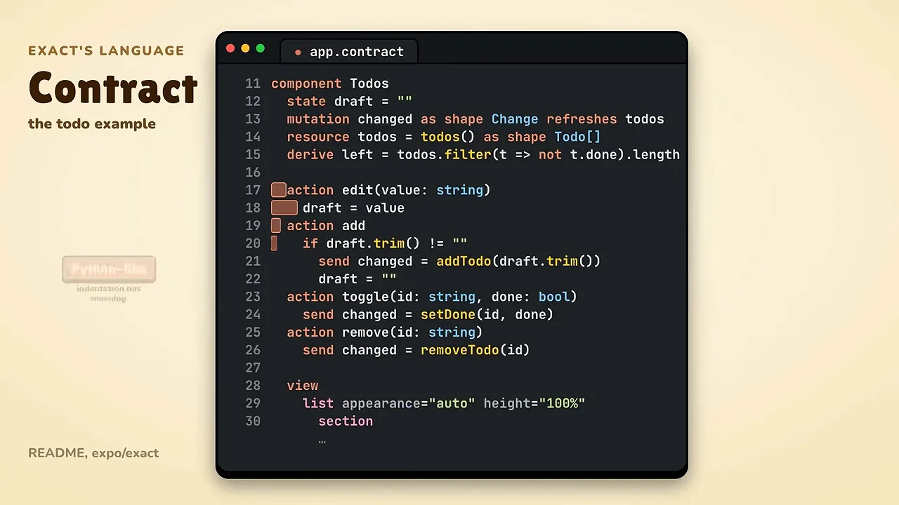
화자가 재미있다고 꼽은 점은 오류 메시지예요. 틀리면 Contract가 무엇을 어떻게 고치라고 알려 주니까, 에이전트가 쓰면서 언어를 스스로 배워요.
앱 로직은 UI 아래에 TypeScript나 Rust로 써요. 두 카드가 플랫폼마다 어디서 도는지 보여 줘요. TypeScript는 네이티브에선 Hermes 엔진, 웹에선 브라우저 엔진에서 돌아요. Rust는 네이티브에선 그대로, 웹에선 Wasm으로 돌아요.
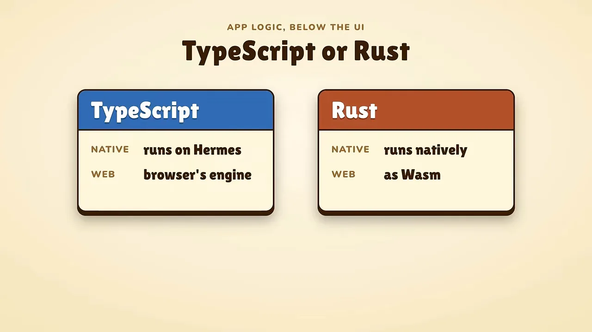
웹뷰도 브리지도 없는 실행 구조
README의 실행 흐름도를 옮긴 슬라이드예요. 왼쪽부터 app.contract가 Contract compiler를 거쳐 노란 plan(테이블과 바이트코드)이 돼요. 위 갈래는 약 20KB 런타임이 웹의 실제 DOM을 그리고, 아래 갈래는 Rust runner와 레이아웃 커널 Taffy가 macOS AppKit, iOS UIKit, Linux GPU 페인터로 그려요. 웹뷰도 자바스크립트 브리지도 끼지 않아요.
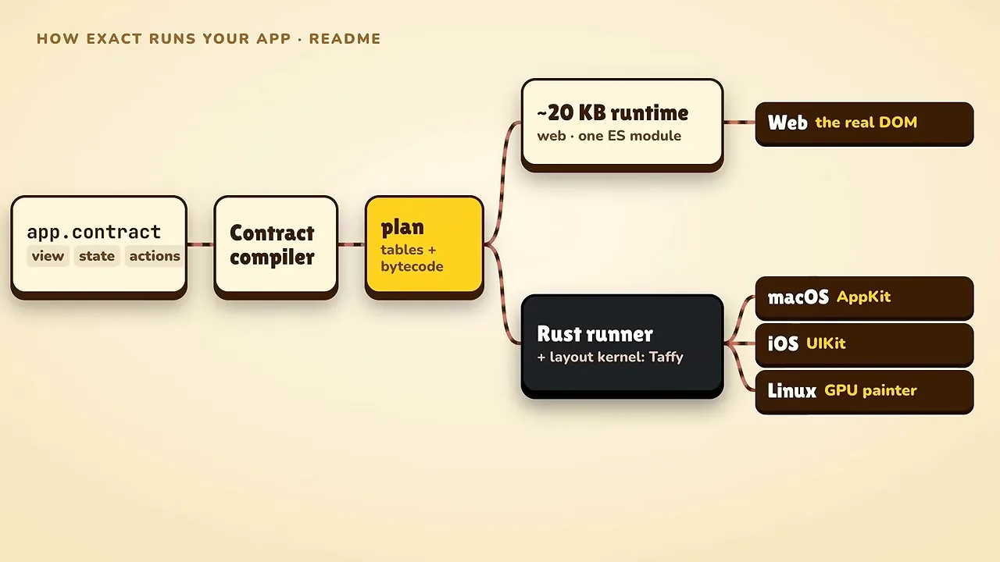
에이전트 명령은 딱 열 개
에이전트가 앱을 다루는 명령은 열 개예요. 슬라이드 위쪽의 bun scripts/agent.mjs <host> 한 줄로 웹·macOS·iOS·Linux에서 똑같이 써요. 오른쪽 아래 노란 메모는 예전 버전이 80개였는데 일부러 열 개로 줄였다는 뜻이에요.
| 명령 | 하는 일 | 명령 | 하는 일 |
|---|---|---|---|
tree | UI 트리 읽기 | layout | 상자 크기·위치 읽기 |
screenshot | 화면 찍기 | logs | 거절·데이터 오류 보기 |
tap | 컨트롤 누르기 | clock | 필요할 때 시간 넘기기 |
type | 글자·키 입력 | prefer | 다크 모드 같은 설정 바꾸기 |
state | 앱 데이터 읽기 | perf | 그리는 데 드는 비용 보기 |
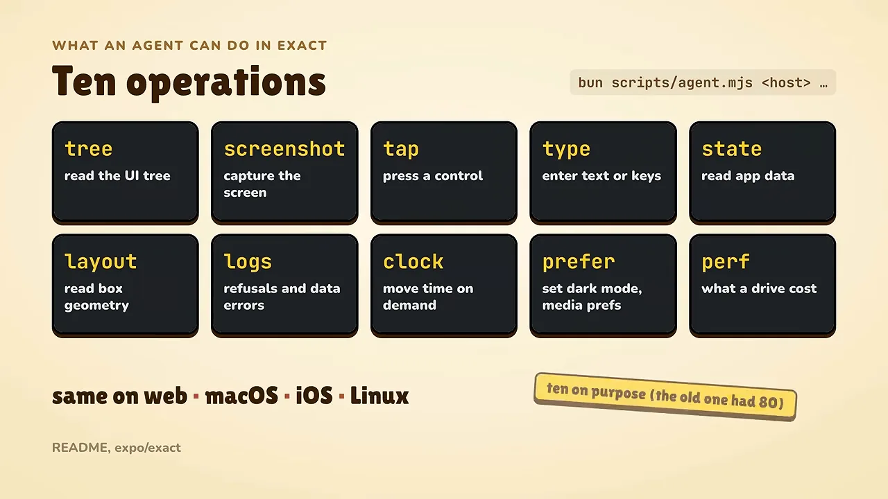
Charlie는 성능도 내세워요. 화면의 두 줄은 Charlie가 스레드에 직접 올린 숫자예요. 무거운 리스트에서 UIKit보다 fps가 살짝 높고(119.9 대 119.6, iPad Pro M1, 120Hz), SwiftUI가 30~50fps로 떨어지는 같은 피드에서 120fps를 유지한대요. 웹에서도 Astro, Next.js, SvelteKit보다 낫다고 했어요. 화자는 아직 증명할 수 없고 프리알파라고 선을 그어요.
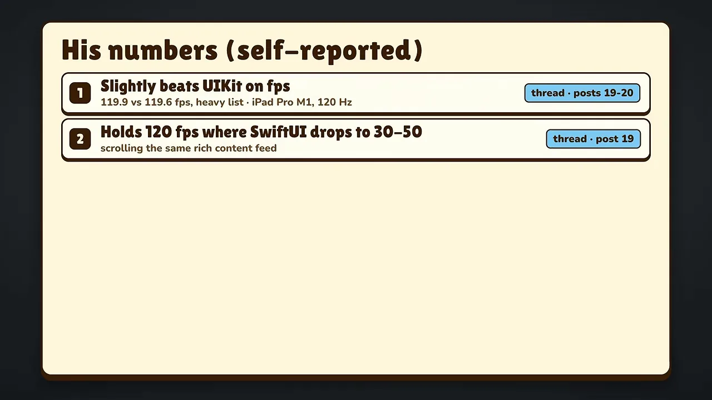
Claude Code로 직접 만들어 보기
화자는 저장소에 있는 '에이전트에게 줄 프롬프트'를 그대로 Claude Code에 넣었어요. 결과는 고전적인 할 일 앱 하나가 세 군데에서 뜬 거예요. 왼쪽이 웹 브라우저, 가운데가 iOS 시뮬레이터, 오른쪽이 macOS 네이티브 앱이에요. 화자는 셋 다 각 플랫폼에 완전히 자연스럽게 느껴진다고 했어요.
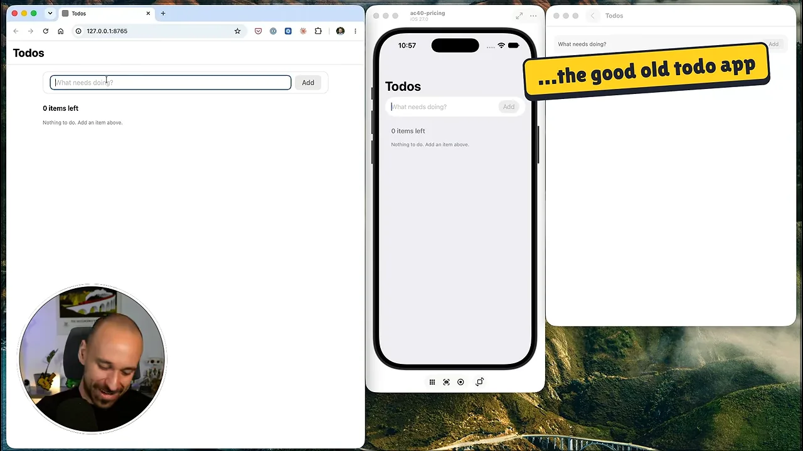
Contract 파일을 Claude에게 설명시키기
화자는 Contract 파일이 뭔지 모르니 Claude에게 "이 Contract 파일을 짧은 다섯 줄로 설명해 줘"라고 시켰어요. 오른쪽 위 검은 상자가 그 프롬프트이고, 아래쪽에 답이 나오기 시작해요. shape는 데이터 타입을 정하고, component Todos가 화면이자 상태의 주인이라는 설명이에요. 화자는 나머지 중 'action 블록만 값을 바꾼다'는 줄을 짚어요.
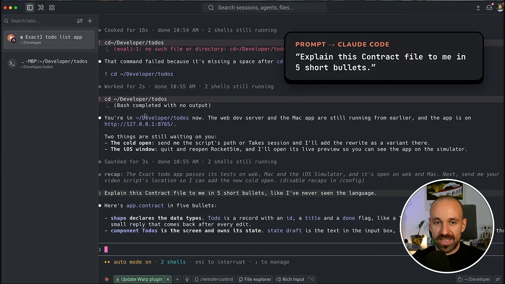
실제 app.contract를 편집기로 열면 이래요. 왼쪽 코드에 shape Todo(id, title, done), routes, component Todos가 보여요. 오른쪽 위 노란 딱지처럼 아직 문법 강조가 없어서 글자가 전부 한 색이에요. 오른쪽 파일 목록에는 app.ts, app.test.contract, AGENTS.md, CLAUDE.md가 있어요. 화자는 TS(TypeScript) 파일은 읽을 만하지만 이건 직접 쓰고 싶은 모양은 아니라고 했어요.
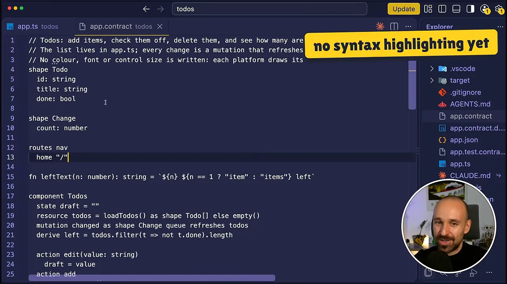
기능 두 개를 에이전트 둘에게 맡기기
그다음 두 에이전트에게 일을 나눠 줬어요.
- 첫 번째 에이전트 — "할 일에 마감일과 '오늘' 필터를 넣어. 끝나면 플랫폼마다 스크린숏을 찍어서 각각 잘 되는지 확인해."
- 두 번째 에이전트 — "할 일을 지우면 5초 동안 되돌리기 토스트를 띄워. 시계로 검증해."
두 번째 지시의 '시계'가 Exact다운 부분이에요. 슬라이드 왼쪽은 보통의 테스트예요. sleep 5로 5초를 기다리면서 '끝났나?'를 바라니 느리고 결과가 들쭉날쭉해요. 오른쪽은 Exact 방식이에요. clock +5000으로 시계를 5초 넘기고 state를 읽으면 애니메이션이 이미 끝나 있어요. 진짜로 기다리지 않고 매번 같은 결과가 나와요.
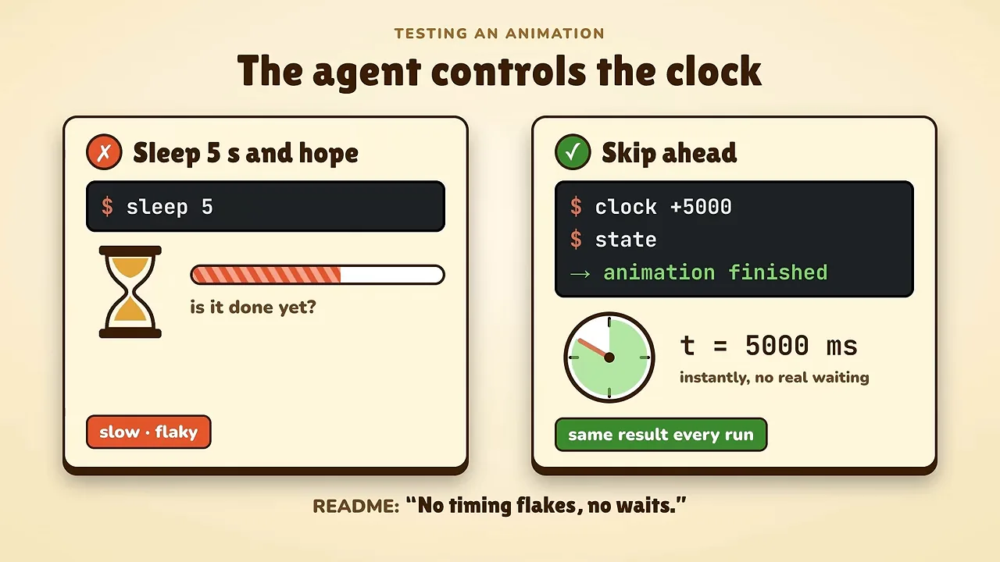
결과: 세 플랫폼에 모두 들어갔어요
웹은 바로 바뀌었지만 네이티브 앱은 다시 불러와야 변경이 보였어요. 화자가 에이전트에게 네이티브 앱도 다시 불러오라고 시킨 뒤, 세 플랫폼 모두 기능이 들어갔어요. 왼쪽 웹 화면 아래에 'Deleted "alsxd"'와 Undo 버튼이 있는 토스트가 떠 있어요. 가운데 iOS 앱에는 Due 날짜 칸과 All·Today 필터가 보여요.
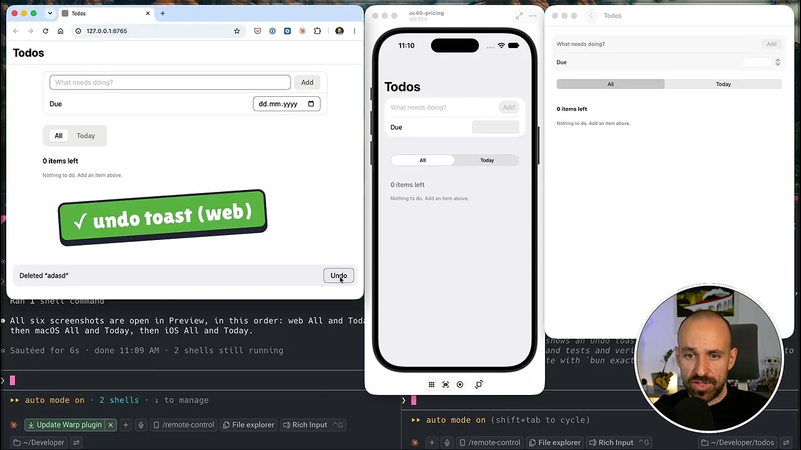
화자가 강조하는 건 과정이에요. Expo 명령도, CLI(Command-Line Interface) 명령도 찾아보지 않았어요. 스크린숏 찍어, 기능 넣어, 앱 띄워라고 말로만 시켰고, 에이전트가 세 플랫폼을 오가며 스크린숏과 시계 테스트까지 알아서 했어요. 코드를 안 보는 게 무섭게 느껴질 수 있지만, 화자에게는 이미 평소 일하는 방식이래요.
행간 읽기: 누구를 위한 프레임워크인가요
Charlie는 Shopify가 React Native를 떠난 바로 그 시점에 Exact를 내놨어요. 벤치마크에서도 Shopify를 직접 겨냥해요. 화면은 Charlie의 데모로, 왼쪽이 Shopify의 네이티브 Shop 앱, 오른쪽이 같은 GraphQL API와 같은 데이터로 만든 Exact 버전이에요.
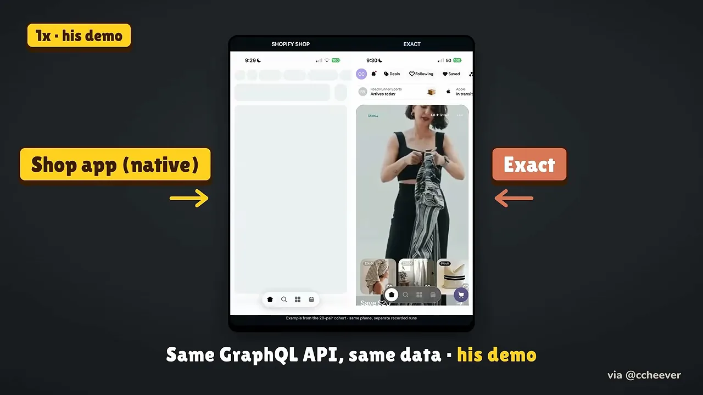
React Native는 사람용, Exact는 에이전트용
화자가 보는 가장 중요한 차이는 누구를 위한 프레임워크인가예요. React Native는 JavaScript·React 커뮤니티를 위해 만들어졌어요. Exact는 사람이 코드를 읽으라고 만든 게 아니라, AI가 모든 플랫폼에서 최선의 결과를 내도록 만든 거예요. 그래서 이런 요소가 들어갔어요.
- 분석하기 쉬운 코드: Rust와 Contract
- 오류 메시지로 도는 피드백 루프
- 내장 시계를 쓰는 자동 테스트
화자는 React가 개발자에게 주는 자유가 오히려 AI에겐 문제라고 봐요. React는 같은 일을 하는 방법이 너무 많고, 그중 useEffect는 코드를 꼬이게 만들기 쉬워요. Exact는 그런 길을 아예 막았다는 거예요.
왜 Expo CEO가 직접 만들었을까
스레드에서 누군가 그 질문을 했고, Charlie는 짧게 답했어요.
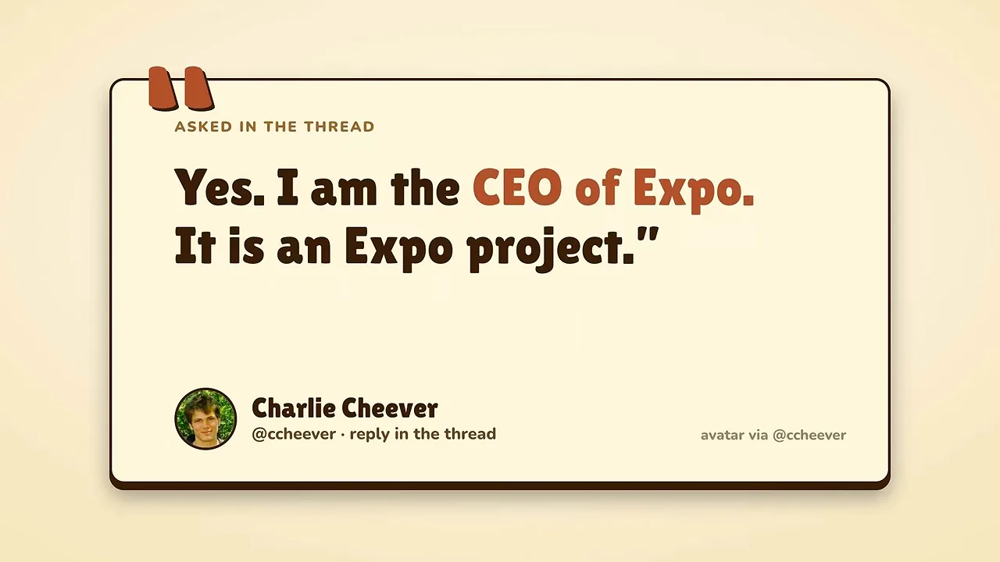
화자는 이것이 React Native가 죽었다는 선언은 아니라고 봐요. Expo가 미래에 대비해 보험을 든 거라는 해석이고, 본인도 '순전히 추측'이라고 밝혀요. Expo와 React Native는 여전히 잘 굴러가고 더 좋아질 거래요.
다른 회사들이 React Native 대신 무엇을 고르는지 정리한 슬라이드가 이 해석을 받쳐요. 왼쪽 점선 묶음 'Rust as the shared core'에 Discord(Rust 공유 코어로 재구축 중, 모바일은 네이티브 UI, 데스크톱은 GPUI)와 Exact(Rust 코어, runner와 레이아웃을 Rust로)가 같이 들어가요. 오른쪽 Shopify는 Swift와 Kotlin의 순수 네이티브예요. 아래 결론은 '아무도 JS를 더 고르지 않는다'예요.
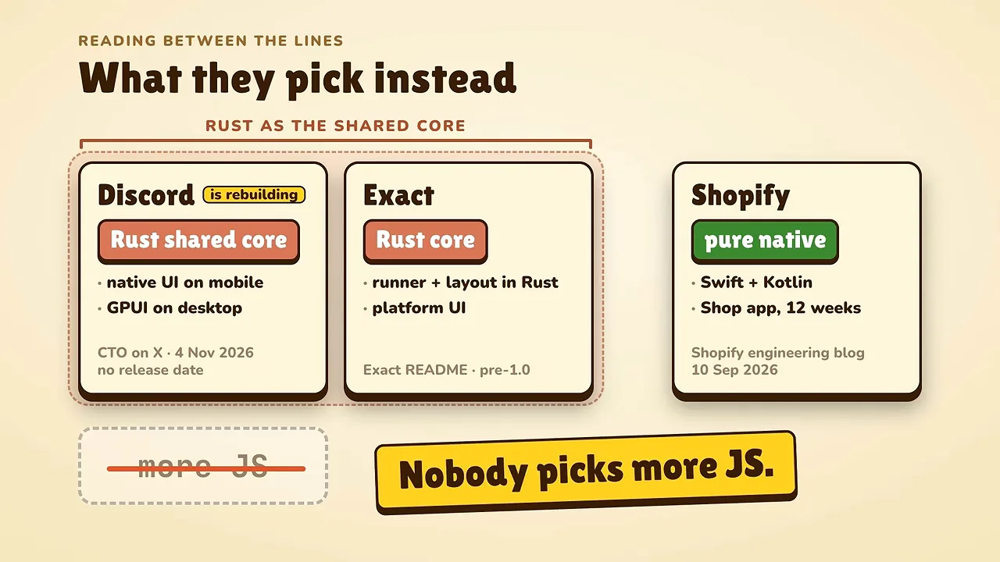
화자의 결론은 언어보다 대상이 바뀌었다는 거예요. 예전 도구는 특정 개발자 커뮤니티를 위해 만들어졌고, 이제는 언어와 상관없이 AI 에이전트를 위해 만든 프레임워크가 필요하다고 봐요.
커뮤니티 반응과 화자의 결론
화자는 마지막으로 X에서 모은 반응을 보여 줘요. 먼저 Charlie의 원래 스레드를 꼭 읽어 보라고 권해요. 화자 표현으로는 '여러분과 여러분의 AI 에이전트가 읽어야 할 걸작'이에요.
써 본 사람들의 반응
Aaron Grider(소개란에 Starlink at SpaceX)는 몇 달째 Exact를 만져 왔다고 해요. iOS 네이티브 UI, 라즈베리 파이에서 도는 임베디드 Linux 앱, Next보다 빨리 뜨는 웹앱을 한 코드베이스로 만들었대요. 노란 형광펜 부분이 'UI 엔지니어링의 성배'라는 평가예요.
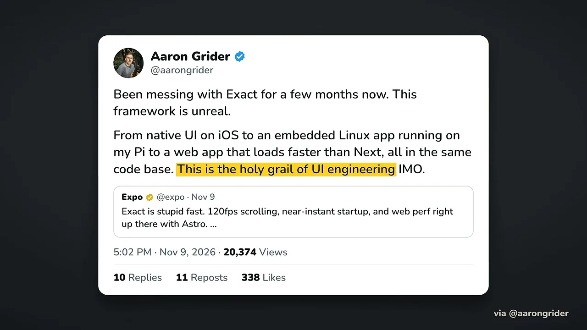
Sanket Sahu는 Exact가 크로스플랫폼 앱 만들기의 '다음 장'일 거라고 썼어요. 화자도 같은 느낌이라고 해요. 게시물 둘째 줄에는 자기들의 GeekNative와 비교해 보고 싶다는 말도 있어요. Jamon은 토요일에 Charlie와 두 시간 이야기한 뒤로 들떠 있다고 했어요.
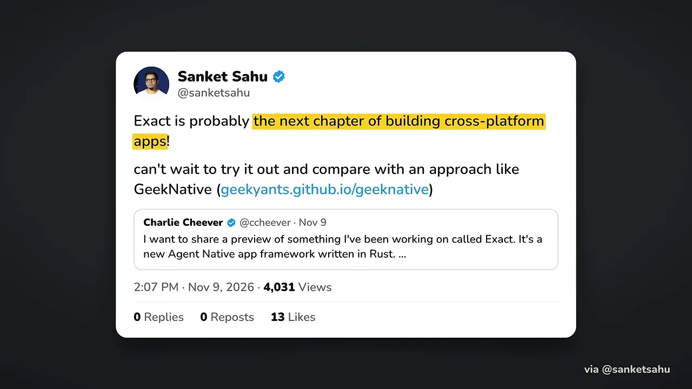
Expo 공동 창업자의 정리
화자는 Expo 공동 창업자 James Ide의 글이 Exact가 주는 걸 잘 요약한다고 했어요. 첫 줄은 Exact를 '크로스플랫폼'이 아니라 고성능 네이티브 앱을 쓰는 '에이전트 네이티브' 방식으로 보라는 말이에요. Charlie도 출시 글에서 크로스플랫폼이라는 말을 쓰지 않았다고 강조해요.
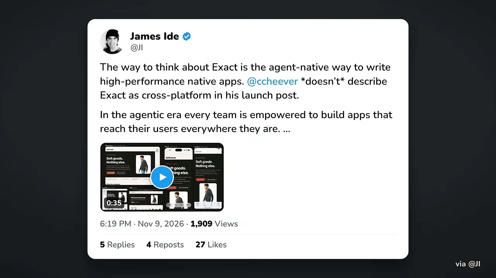
글 본문은 비용 이야기예요. 에이전트가 플랫폼 N개의 코드베이스를 따로 쓰면 토큰 비용도 N배가 돼요. 다른 회사들은 에이전트로 기존 코드베이스를 빨리 짜는 '더 빠른 말'을 만드는 중이고, Exact는 '자동차'라는 비유예요. Exact는 N개 플랫폼 비용을 1배, 아니면 N배의 일부로 낮추려 해요. 마지막 문단은 기대치를 낮춰요. 한 플랫폼용 Exact 코드가 다른 플랫폼에서 마법처럼 완벽하진 않고, 플랫폼마다 손이 조금씩 간다는 거예요.
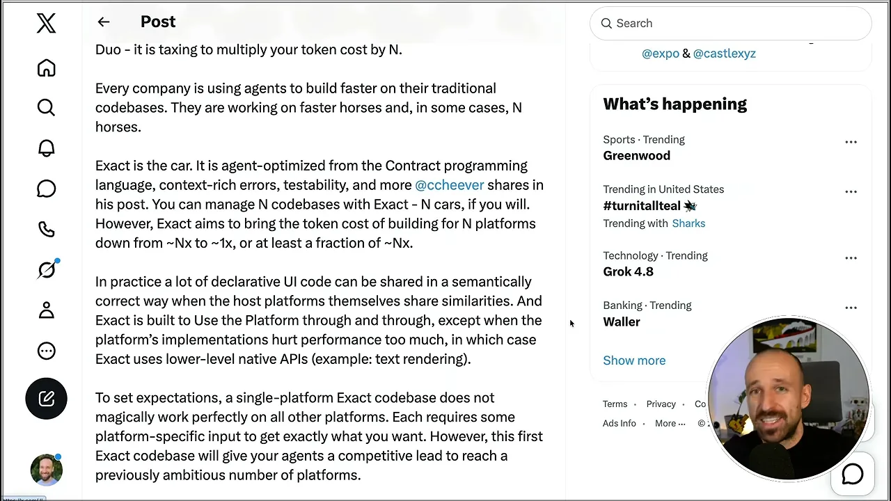
화자의 결론
화자는 Swift로도, Godot으로도, React Native로도 게임을 만들어 봤어요. 그러면서 늘 다음 단계가 뭘지 궁금했는데, 에이전트 우선 프레임워크인 Exact가 바로 그 단계일 수 있다고 봐요. 다만 아직 공개된 지 하루라, 지켜볼 것도 분명히 짚어요.
- Android 지원이 얼마나 빨리 따라오나요?
- npm 같은 기존 도구 생태계와 잘 붙나요?
- Exact로 만든 큰 실제 앱이 나오나요?
마지막 슬라이드는 시청자에게 묻는 질문이에요. 에이전트가 쓰고 나는 한 줄도 읽지 않는 언어로 만든 앱을 스토어에 내겠냐는 거예요. 아래 세 버튼 React Native, native, Exact 중 하나를 골라 댓글로 달라고 해요.
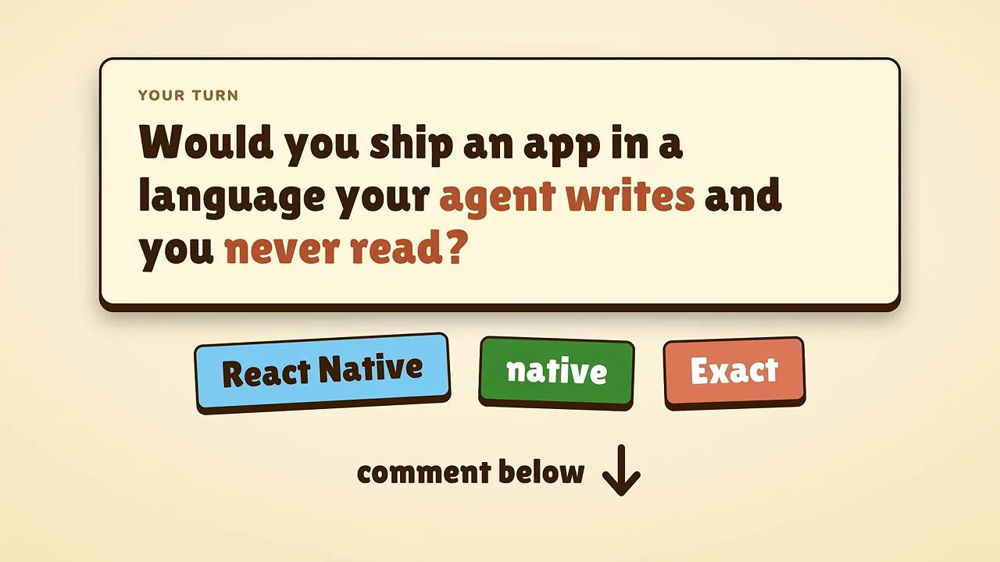